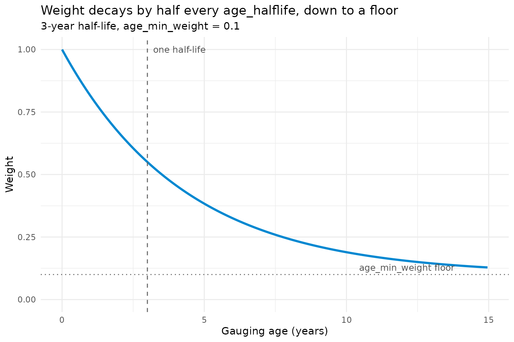
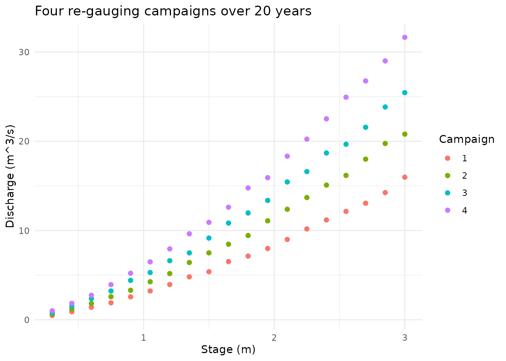

Recency Weighting: The Maths Behind age_halflife
Jonathan Payne, Environment Agency Flood Forecasting
September 2026
Source:vignettes/recency_weighting_guide.Rmd
recency_weighting_guide.RmdA rating fitted from gaugings spanning many years implicitly treats a
measurement from a decade ago as equally informative about
today’s channel as one from last month. That’s usually wrong:
riverbeds erode and deposit, vegetation grows and is cleared, channels
get re-cut by a flood (Mansanarez et al. 2019, “Shift happens!”, covers
exactly this). vignette("non_standard_optimisation")
flagged this as an open gap – gauging_datetime was captured
but nothing read it. age_halflife closes that gap: opt-in
recency weighting for rate_optimise() and
rate_optimise_segmented().
The formula
Each gauging’s contribution to the fit is scaled by a weight between
age_min_weight and 1:
where
is that gauging’s age in days relative to
reference_datetime (clamped at 0, so a gauging dated
after the reference simply gets full weight 1 rather than
something above 1), and
is age_halflife – the age, in days, at which a gauging’s
weight has decayed exactly halfway from 1 to the floor
(age_min_weight).
h <- 365 * 3 # 3-year half-life
w_min <- 0.1
age_days <- seq(0, 365 * 15, by = 30)
weight <- w_min + (1 - w_min) * 0.5^(age_days / h)
ggplot(data.table(age_years = age_days / 365, weight), aes(age_years, weight)) +
geom_line(colour = "#0288d1", linewidth = 1.1) +
geom_vline(xintercept = h / 365, linetype = "dashed", colour = "grey40") +
geom_hline(yintercept = w_min, linetype = "dotted", colour = "grey40") +
annotate("text", x = h / 365, y = 1, label = " one half-life", hjust = 0, size = 3.3, colour = "grey30") +
annotate("text", x = 14, y = w_min, label = "age_min_weight floor ", hjust = 1, vjust = -0.6, size = 3.3, colour = "grey30") +
scale_y_continuous(limits = c(0, 1)) +
labs(
title = "Weight decays by half every age_halflife, down to a floor",
subtitle = "3-year half-life, age_min_weight = 0.1",
x = "Gauging age (years)", y = "Weight"
) +
theme_minimal(base_size = 11)
Two properties worth reading directly off that curve. First, the
decay is genuinely exponential, not linear – a gauging loses half its
remaining “extra” weight (above the floor) every
age_halflife, regardless of how old it already is. Second,
the curve never reaches zero: it asymptotes to
age_min_weight, however old a gauging gets.
Why there’s a floor at all
A naive age-only decay, run out far enough, would eventually treat
any sufficiently old gauging as worth almost nothing – including a
limb’s single highest-flow flood, if that happened to be gauged early in
the record. That’s exactly backwards: a rare, informative extreme is not
less true for being old, and a limb’s high end is usually the part with
the fewest gaugings to begin with
(vignette("leverage_influence_guide") covers what happens
when one gauging is disproportionately load-bearing; losing it to age
decay is the same problem from a different direction).
age_min_weight is the guard against that: whatever else
happens, no gauging’s weight falls below it.
Be clear about what this floor does and doesn’t do. It stops any single gauging being weighted to nothing – but it is not magnitude-aware. An old extreme flood and an old ordinary low-flow gauging decay along exactly the same curve; the floor protects both equally, not the flood specifically. Building a scheme that down-weights by age only among gaugings of similar size – so a big old flood keeps more of its influence than a routine old gauging does – is a real refinement this doesn’t attempt. Issue #9 tracks that fuller version; what’s built here is the simpler, defensible partial answer: nothing is ever fully forgotten.
A worked example
Four gauging campaigns, seven years apart, at a station whose channel
has genuinely drifted – each campaign’s own C has crept up
over the twenty years spanned (a growing channel control, easy to
imagine as bed scour or bank erosion opening up the section over
time):
stage_seq <- seq(0.3, 3, by = 0.15)
eras <- data.table(year = c(0, 7, 14, 20), true_C = c(3, 4, 5, 6))
set.seed(3)
gaugings <- rbindlist(lapply(seq_len(nrow(eras)), function(i) {
data.table(
campaign = i,
stage_m = stage_seq,
discharge_cms = eras$true_C[i] * stage_seq^1.5 * exp(rnorm(length(stage_seq), sd = 0.02)),
gauging_datetime = as.Date("2000-01-01") + eras$year[i] * 365 + round(seq_along(stage_seq) * 0.5)
)
}))
ggplot(gaugings, aes(stage_m, discharge_cms, colour = factor(campaign))) +
geom_point(size = 1.8) +
labs(title = "Four re-gauging campaigns over 20 years", x = "Stage (m)", y = "Discharge (m^3/s)", colour = "Campaign") +
theme_minimal(base_size = 11)
Fitted flat (every gauging counted equally regardless of when it was taken) against fitted with three-year recency weighting:
fit_flat <- rate_optimise(
gaugings$discharge_cms, gaugings$stage_m,
gauging_datetime = gaugings$gauging_datetime, n_bounds = c(1.5, 1.5)
)
fit_recent <- rate_optimise(
gaugings$discharge_cms, gaugings$stage_m,
gauging_datetime = gaugings$gauging_datetime, n_bounds = c(1.5, 1.5),
age_halflife = 365 * 3, age_min_weight = 0.02
)
rbind(
data.table(fit = "flat (unweighted)", fit_flat@limbs[, .(C, a, n, rmse_cms)]),
data.table(fit = "age_halflife = 3 years", fit_recent@limbs[, .(C, a, n, rmse_cms)])
)
#> fit C a n rmse_cms
#> <char> <num> <num> <num> <num>
#> 1: flat (unweighted) 4.504656 0.001083338 1.5 3.149609
#> 2: age_halflife = 3 years 5.674177 0.003926952 1.5 4.519751The flat fit lands close to 4.5 – the simple average of the four
campaigns’ true C (3, 4, 5, 6). The recency-weighted fit
sits noticeably closer to 6, the most recent campaign’s true value,
without discarding the older campaigns outright (their gaugings still
carry age_min_weight’s worth of influence, visible in
@gaugings):
fit_recent@gaugings[, .(age_weight = round(mean(age_weight), 3), n_gaugings = .N),
by = .(campaign_year = data.table::year(gauging_datetime))
][order(-campaign_year)]
#> campaign_year age_weight n_gaugings
#> <int> <num> <int>
#> 1: 2020 0.998 10
#> 2: 2019 0.995 9
#> 3: 2014 0.264 13
#> 4: 2013 0.264 6
#> 5: 2007 0.068 17
#> 6: 2006 0.068 2
#> 7: 2000 0.030 19If the true channel had been stable over those twenty years instead, both fits would land in the same place – recency weighting only pulls a fit away from the flat answer when the data actually gives it a reason to, by penalising disagreement between old and new gaugings, not merely the passage of time.
Using it in practice
rate_optimise(
discharge_cms, stage_m,
gauging_datetime = gauging_datetime, # required for any of this to apply
age_halflife = 365 * 5, # a 5-year half-life
age_min_weight = 0.1, # never below 10% weight
reference_datetime = NULL # default: as of this dataset's own most recent gauging
)age_halflife = NULL (the default) fits exactly as before
– supplying gauging_datetime alone changes nothing about
the fit; recency weighting only switches on once
age_halflife is set. There’s no universally right
half-life: a station with a fast-shifting bed (regular dredging, an
actively eroding bank) might reasonably use one or two years; a stable,
well-established control might use ten or more, or skip weighting
entirely. reference_datetime defaults to the dataset’s own
latest gauging – pass an explicit value (e.g. today’s date) if you want
ages measured forward to when the rating is actually being
used, rather than back from its last gauging.
rate_optimise_segmented() takes the same three
arguments, weighting its single joint fit the same way.
rate_optimise_constrained() forwards them through
... to its own internal rate_optimise() call,
same as gauging_datetime itself already does.
References
Mansanarez, V., Renard, B., Coz, J.L., Lang, M., & Darienzo, M. (2019). Shift happens! Adjusting stage-discharge rating curves to morphological changes at known times. Water Resources Research, 55(4), 2876-2899.
Where to go next
-
vignette("non_standard_optimisation")– the wider set of situations where the default fit’s assumptions can fail, of which gauging age was one. -
vignette("leverage_influence_guide")– what happens when one gauging (old or otherwise) is disproportionately steering a limb’s fit; the same underlying concern theage_min_weightfloor guards against from a different angle. -
?rate_optimise,?rate_optimise_segmented– full argument reference.